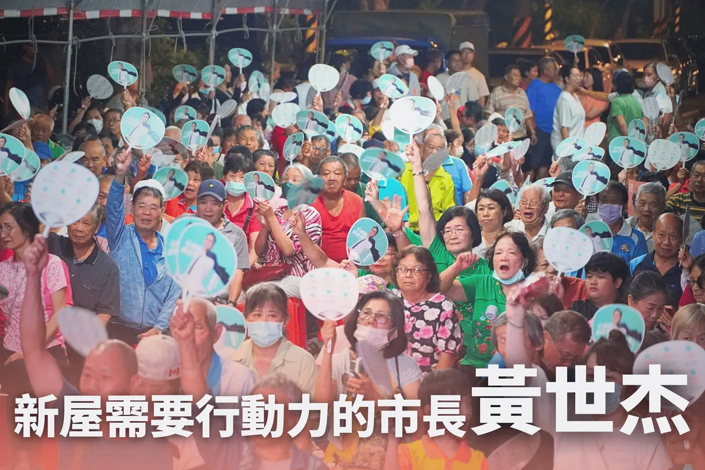
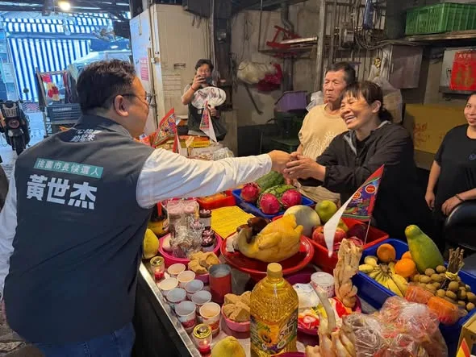
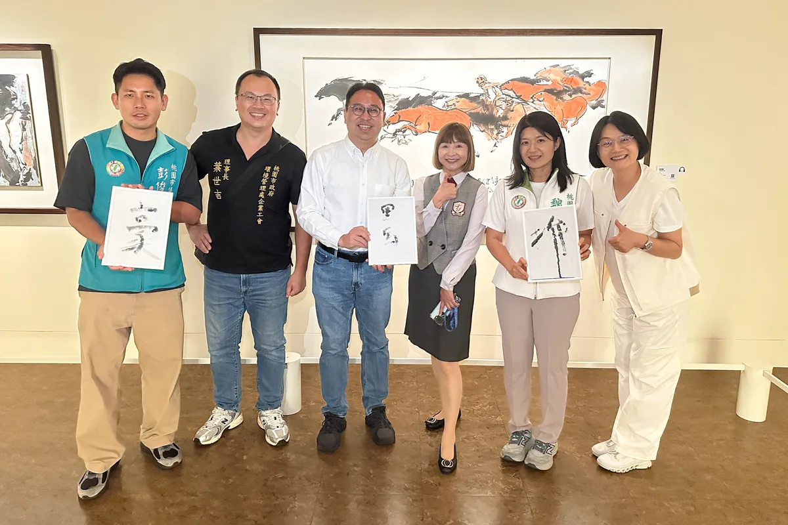
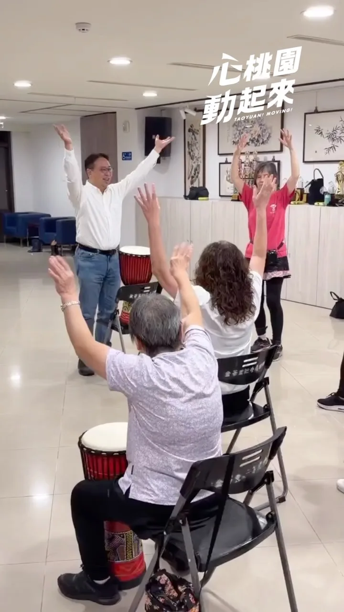
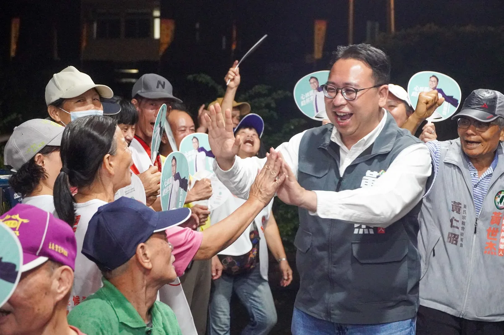
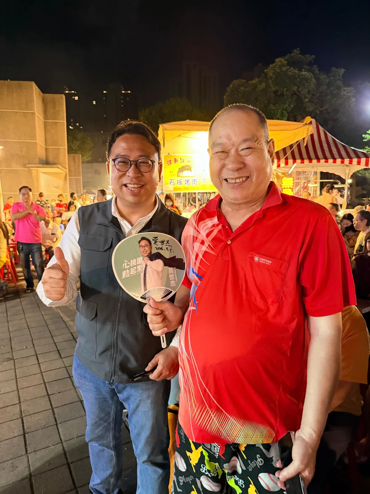
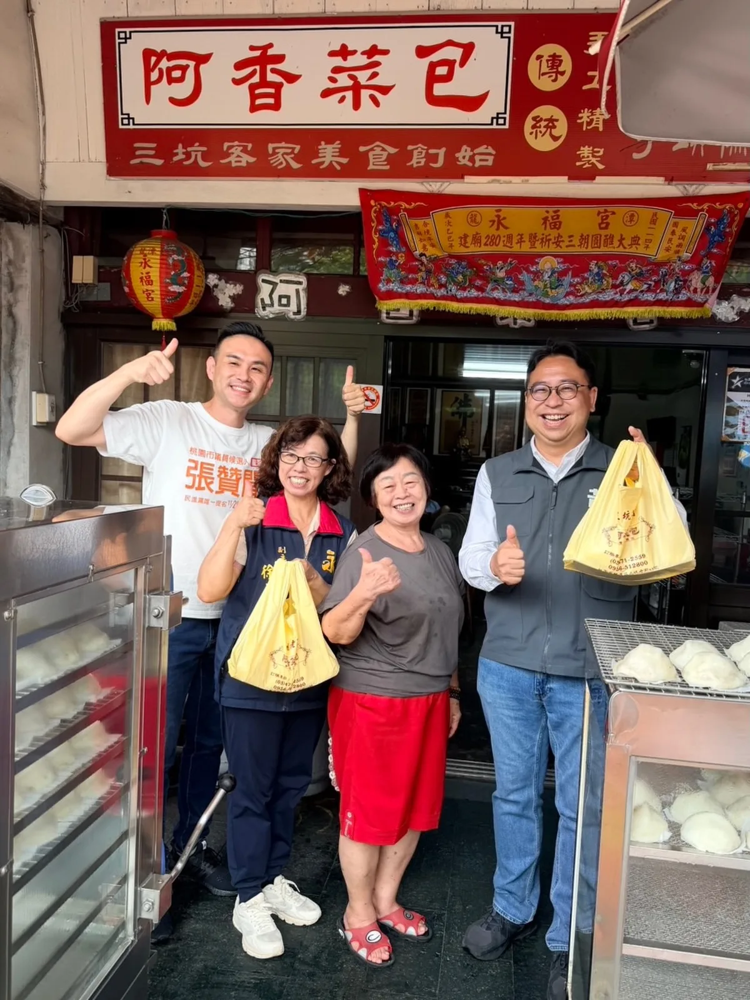
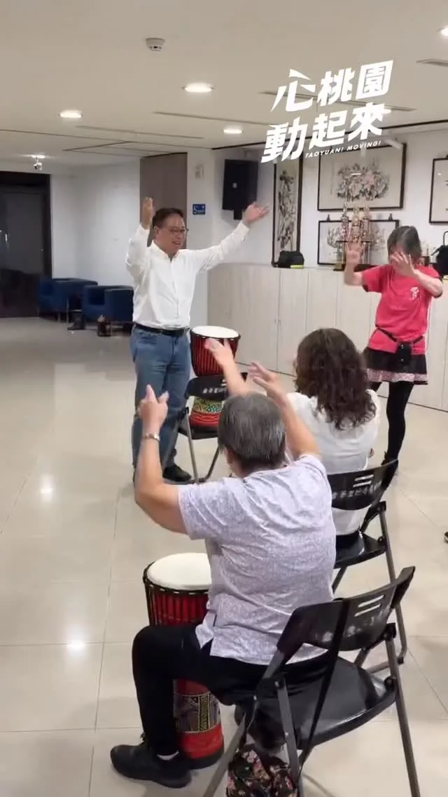

@schuanglawyer:跑到現在，才有空坐下吃今天的第一餐😅 趕快補充能量，準備迎接晚上的中秋晚會馬拉松！
Accounts
| 平台 | 帳號 | 已收錄貼文 | 最後更新 |
|---|---|---|---|
| https://www.facebook.com/SCHuangLawyer/ | 106 | 2026-09-06 21:00 | |
| https://www.instagram.com/schuanglawyer/ | 150 | 2026-09-11 16:51 | |
| Threads | https://www.threads.com/@schuanglawyer | 186 | 2026-09-11 16:51 |
Timeline
顯示 446 / 446 則
@schuanglawyer:跑到現在，才有空坐下吃今天的第一餐😅 趕快補充能量，準備迎接晚上的中秋晚會馬拉松！
我和何志偉副秘書長 @ho_art_501 ，一起到觀音愛心家園「拜師學藝」！ 小老師們手很巧，紙盒摺得又快又工整。親手烘焙的手工點心香氣四溢，主任還沒介紹完，志偉就忍不住開動，我也默默嗑光一整盒，真心推薦👍 每一份點心禮盒，都是他們靠雙手自立生活、踏實前行的證明。 不只中秋節，平時也歡迎市民朋友多多支持桃園各家庇護工場，給這群認真的寶貝更多被看見的舞台💖
運動心桃園，幸福動起來 .ᐟ 今天是9/9國民體育日，也是運動部正式成立滿一周年。世杰今天和桃園體育界舉辦座談會，向總統府葉政彥國策顧問、前運動部鄭世忠政務次長、邱炳坤教授及黎正評教授等各領域教練及專業人士請益，交流對桃園體育發展的想法。 世杰認為，桃園除了要栽培優秀的運動選手，也必須創造讓每位市民都能自在運動、健康生活的城市💪 我是黃世杰，我要打造「打造心生活運動城市」： 📢推動全民運動，構築大桃園運動生活圈 ➊推動學校多元運動社團，導入專業合作機制 ➋擴增多元戶外運動空間，升級運動環境友善設施 ➌推動分齡與分區運動賽事，打造「桃園全民運動季」 ➍設置專屬適應運動中心與共融運動據點 📢強化桃園運動選手的培訓與照顧，擴大健全照護防護網 ➊調整桃園選手參加各項賽事的獎勵制度 ➋串聯醫療資源，打造健全照護防護網 📢打造桃園成為國際運動城市的品牌，用運動連結世界 讓世界看見桃園，發展具有國際發展潛力項目，建立國際合作，打造桃園運動城市新品牌。 未來，我會全力改善桃園的體育環境，打造全民運動心生活，從孩子到選手、從社區到國際，讓運動真正扎根桃園，一起打造充滿活力、全民運動的幸福城市💖

在文燦市長時代，新屋曾經是被重視的焦點。換張善政後，新屋又被邊緣化，成為被遺忘的邊陲。 市長如果有心，能為地方帶來的改變無可限量。 但這幾年，新屋人看到的只有停滯跟空轉。 翻轉新屋，需要真正有魄力、有願景、傾聽基層的行動派。 黃世杰已經準備好，把專業與歷練，毫無保留奉獻給最摯愛的家鄉！我知道大家的期待，不只是疼惜新屋子弟，而是期盼一個懂桃園、把新屋放在心上的市長。 11/28，讓我們一起站出來支持黃世杰、翻轉大桃園。終結怠惰散政，讓心桃園全面動起來！

從中元前夕，我就參加各式各樣的普渡。今天我到桃園觀光夜市、中壢批發市場、中壢青果市場，和鄉親朋友們一起拜拜普渡，祈求平安。 我也趁著行程和市民朋友聊聊，了解大家關心的、想要改變的事。 這是我一直以來堅持多走多聽的原因，只有去瞭解地方真正的需要，未來市政的推動才能貼近市民需求！讓我們一起翻轉桃園，桃園大步向前💖
肆拾同行💚世杰陪同蕭美琴 Bi-khim Hsiao副總統沿著老街溪畔健走，遇到很多運動的市民。看到大家臉上的笑容，讓我想起這條河流一路以來的翻轉跟重生。 十幾年前，老街溪曾是人人避之唯恐不及的臭水溝。在中央支持、文燦市長八年打拚下，市府推動老街溪開蓋與全流域整治，把溪流跟水岸綠帶還給市民，如今老街溪已經成為大家散步、休憩的好所在。 老街溪的蛻變，不只是河川整治的典範，更證明了有遠見、有執行力的團隊，能讓一座城市脫胎換骨。 從中央穩健執政十年，到桃園八年飛躍成長，世杰一路深耕其中。無論是在桃園市政府擔任參議與顧問，在府內協調推動各項建設跟計畫，或在立法院爭取預算，我都不曾缺席。我親眼見證家鄉轉變，我比誰都清楚，桃園的潛力遠遠不止於此。 四十年前，民進黨前輩在威權陰霾下無畏創黨。四十年後的今天，新世代接下火炬，肩負起守護民主、守護台灣、守護桃園的使命。 健走後的天空落下大雨，但風雨會讓我們的意志更堅定。 11/28，懇請大家支持最懂市政實務、最貼近基層、最有行動力的黃世杰！支持我身邊27位議員夥伴，讓桃園隊全壘打！ 新世代扛起新時代，我們會攜手翻轉停滯、加速建設，讓心桃園動起來💖
今晚的桃園，熱力全開！連跑瑞慶里、南埔里、玉山里和東埔里的中秋晚會。一走進會場，就聽到滿滿的歡笑聲、摸彩聲😁 「世杰，幫我在扇子上簽名！」「再加油，衝過去！」看見大家比出大大的讚，真的非常感謝。市民朋友的信任，就是支持我每天往前衝的最大力量。 活動非常精彩圓滿，幕後大功臣就是所有里長、鄰長與志工夥伴，感謝你們辛勞奔走，凝聚整個社區。未來我也會用同樣的精神，團結大桃園！ 未來，我會繼續走遍地方，握緊每雙手，和大家一起拚，讓我們深愛的桃園變得不一樣！一起讓心桃園，動起來💖

@schuanglawyer:走進展間，迎面而來的是筆勢豪邁、氣韻生動的水墨線條。 藝術家李奇茂筆下的市井百態和鄉土風情，有大膽奔放的筆墨，也蘊含了豐富人文情懷。欣賞畫作，就像是在閱讀屬於台灣的生活記憶。 世杰跟彭俊豪議員 @c_peng 、魏筠議員 @weiyunin 來到創價美術館，欣賞李奇茂水墨展。台灣創價學會長期投入文化教育推廣，除了打造免費向市民開放的美術館，也透過行動美術館，在校園播下美育種子。 桃園有許多值得被看見的民間藝文基地。未來世杰進入市府，會積極串聯資源，讓文化活動深入各區。藝術不只是少數人專利，是每位市民都能親炙的日常。 一座進步城市，要有健全的基礎建設，更要有生活美感，我們要攜手把桃園打造成文化底蘊豐厚的宜居之都！ 在氣勢磅礡的畫作前，解說員轉頭對我說：「祝福你像那匹黑馬。」感謝大家的厚愛跟期許，我會帶著後發先至的韌性，為家鄉全力以赴、逆轉勝出！

來探班🥁感謝中壢金華里非洲鼓班姐姐哥哥們的熱烈歡迎！

@schuanglawyer:登記參選市長的隔天，世杰回到新屋，到養育我長大的老家向鄉親報告。 一個懂得疼惜新屋辛酸的市長，才有能力真正守護大桃園。 只有把這裡當成唯一歸宿的人，才會在風雨來襲時，毫無保留地跟所有人站在一起風吹雨淋。 新屋的孩子站出來了。這一仗，不只是在地子弟為家鄉爭一口氣，更是所有市民，要一起把城市的未來找回來，交給真正在乎桃園的人！
跑到現在，才開始吃今天的第一餐😅 趕快補充能量，迎接晚上的中秋晚會馬拉松！
@schuanglawyer:這是一個情境題。 如果你是一位市長，遇到愈來愈多年輕人、外地遊客慕名而來，甚至吸引國際旅客專程前往的熱門景點，你會怎麼做？ 一般人當市長，會用心經營、大力推廣。 絕對不是放任合約到期、消極擺爛。 很遺憾地，從明天起，桃園神社的原經營團隊合約期滿撤離，神社將正式面臨營運空窗期。而且這不是突發狀況，桃園市政府早就知道委外契約即將到期。 我要問張善政，為什麼沒有提前招商、做好交接？任由好不容易打造的城市亮點，苦心累積的成果瞬間歸零。張善政的消極與擺爛，再次暴露了他對地方觀光和文化資產的漫不在乎！ 更何況桃園神社早就不只是普通的觀光景點，而是珍貴的文化資產。 面對桃園神社的未來，我上任後，會積極尋找好的團隊，延續過去成功的經驗，讓在地文化一點一滴累積成城市品牌，和市民一起重新擦亮桃園的名字！
今天午後，我和總統府何志偉副秘書長 @ho_art_501 走進觀音愛心家園，空氣裡瀰漫著剛出爐的糕點甜香，耳邊傳來純真燦爛的笑聲。 我和志偉坐下來，向憨兒寶貝學習組裝中秋紙盒。看著他們小心翼翼對齊摺線、壓平邊角，眼神裡滿是專注。 前陣子外頭有些紛擾與考驗，但他們沒有退縮，因為手裡摺的不只是紙盒，更是自立生活的尊嚴。遞出的每一塊點心，都是想跟世界分享的心意，而且真的非常好吃，連不常吃甜點的我都一口接一口。 一筆訂單，對大家來說只是日常的選擇，對他們而言，卻是證明自我價值的舞台。所幸各界的善意及時匯聚，觀音愛心家園今年中秋訂單已額滿，我和志偉也特別預訂了年節禮盒，要把這份支持延續下去。 除了民間的熱心，地方政府更該主動搭起橋梁，串聯公部門採購與企業資源，把一次的幫助轉化為長遠的機會。 一座城市的溫度，不是看它有多少高樓大廈，而是看它願不願意為走得慢的人留一盞燈。 未來的桃園，不僅要大步建設，更要成為一座溫暖、包容，讓每個人都能活出尊嚴跟價值的城市❤️
被美琴副總統 @bikhimhsiao 認證，是最了解桃園、最專業積極、有願景也有魄力的「鄰家男孩」🙋♂️ 求學時代，我從中壢國小到小復旦，跟著桃園一起成長，現在正是最有衝勁、最有活力的時刻！ 年輕桃園準備起飛，11/28桃園市長懇請支持黃世杰，一起讓心桃園動起來💖
@schuanglawyer:我跟美琴副總統 @bikhimhsiao 沿著老街溪畔健走，遇到很多運動的市民。看到大家臉上的笑容，讓我想起這條河流一路以來的翻轉跟重生。 十幾年前，老街溪曾是人人避之唯恐不及的臭水溝。在中央支持、文燦市長八年打拚下，老街溪已經成為大家散步、休憩的好所在。 老街溪的蛻變，不只是河川整治的典範，更證明了有遠見、有執行力的團隊，能讓一座城市脫胎換骨。 從中央穩健執政十年，到桃園八年飛躍成長，世杰一路深耕其中、不曾缺席。我親眼見證家鄉轉變，我比誰都清楚，桃園的潛力遠遠不止於此。 11/28，懇請大家支持最懂市政實務、最貼近基層、最有行動力的黃世杰！ 懇請支持我身邊27位議員夥伴，讓桃園隊全壘打，讓我們攜手翻轉停滯、加速建設，讓心桃園動起來💖
@schuanglawyer:今晚的桃園，熱力全開！連跑瑞慶里、南埔里、玉山里和東埔里的中秋晚會。一走進會場，就聽到滿滿的歡笑聲、摸彩聲😁 「世杰，幫我在扇子上簽名！」「再加油，衝過去！」看見大家比出大大的讚，真的非常感謝。市民朋友的信任，就是支持我每天往前衝的最大力量。 活動非常精彩圓滿，幕後大功臣就是所有里長、鄰長與志工夥伴，感謝你們辛勞奔走，凝聚整個社區。未來我也會用同樣的精神，團結大桃園！ 未來，我會繼續走遍地方，握緊每雙手，和大家一起拚，讓我們深愛的桃園變得不一樣！一起讓心桃園，動起來💖
@schuanglawyer:跑龍潭行程，一定要去三坑老街買我跟老婆都愛的菜包！ （那我可以申請不睡沙發了嗎）
走進展間，迎面而來的是筆勢豪邁、氣韻生動的水墨線條。 藝術家李奇茂筆下的市井百態和鄉土風情，有大膽奔放的筆墨，也蘊含了豐富人文情懷。欣賞畫作，就像是在閱讀屬於台灣的生活記憶。 世杰跟彭俊豪議員 @c_peng 、魏筠議員 @weiyunin 來到創價美術館，欣賞李奇茂水墨展。台灣創價學會長期投入文化教育推廣，除了打造免費向市民開放的美術館，也透過行動美術館，在校園播下美育種子。 桃園有許多值得被看見的民間藝文基地。未來世杰進入市府，會積極串聯資源，讓文化活動深入各區。藝術不只是少數人專利，是每位市民都能親炙的日常。 一座進步城市，要有健全的基礎建設，更要有生活美感，我們要攜手把桃園打造成文化底蘊豐厚的宜居之都！
@schuanglawyer:張善政最近大力宣傳市立醫院觀音分院，事實上，他上任三年多以來，土地還在整合、工程進度往後延，連24小時急診都還沒確定，就急著拿來當政績宣傳？ 張市府原本說這塊地要規劃市場、複合商場，後來改成門診、檢查為主的「院區」，今年又變成有住院病床的「分院」，但名稱越喊越大，最基本的醫療量能卻始終沒有說清楚。 這就是張善政慣用的手法，把他說不出有做什麼、根本怠惰沒做、也不一定能進行的計劃，先拿來當成偽政績宣傳。 像是台積電進駐龍科三期、像是幼擴二期、像是可負擔住宅。 觀音人要「真醫療資源」，不是選前的「可宣傳醫院」。 桃園人要「真正的建設」，不是選前的「可宣傳建設」。
@schuanglawyer:翻出當年服役時的老照片，理得短短的平頭，鋼盔壓在額頭上的悶熱感，依然歷歷在目。 今天是九三軍人節，世杰要向在前線捍衛國土的官兵弟兄姐妹，以及退除役前輩們致上最崇高的敬意🫡 軍人守護國家，地方政府守護軍人與家庭。祝所有國軍弟兄姐妹，軍人節快樂🪖
@schuanglawyer:我和何志偉副秘書長，一起到觀音愛心家園「拜師學藝」！ 小老師們手很巧，紙盒摺得又快又工整。親手烘焙的手工點心香氣四溢，主任還沒介紹完，志偉就忍不住開動，我也默默嗑光一整盒，真心推薦👍 每一份點心禮盒，都是他們靠雙手自立生活、踏實前行的證明。 不只中秋節，平時也歡迎市民朋友多多支持桃園各家庇護工場，給這群認真的寶貝更多被看見的舞台💖
我和黃家齊議員 @jack790218 都熱愛打籃球🏀這次就用一場三對三，來聊聊我們理想中的「運動城市」！ 世杰要打造「10分鐘運動生活圈」，從孩子的多元運動社團、年輕人的戶外運動空間；到長輩、身障朋友的分齡運動與共融據點；專業選手的培訓、獎勵、醫療照護也要全面升級，讓全民都能動、選手放心拚💪🏻更要打造「桃園全民運動季」，把桃園的運動品牌推向國際，用運動連結世界、讓世界看見桃園！ 運動心桃園，幸福動起來💖Taoyuan, This is for you!
9/9律師節。 回想我執業的日子，和大家印象中穿律師袍，天天跑法院的想像有點不同。更多時候，我專注梳理法規架構、制度設計跟風險把關，隱身在幕後捍衛公平。 走入公共事務後，我帶著法學訓練，投入對社會有益的制度工程改造。 我在桃園市政府時，參與升格直轄市的龐雜自治法規翻新，為新桃園奠定運作基石。在立法院，把基層民意轉化為嚴謹法案，守護國家大政和民主法治。到了法務部，則從中央視角推動各項法務政策，強化國家法制防線。 現在，我帶著地方自治、中央行政和立法歷練，回到桃園投入市長選舉。我知道，一套好的制度，能改變千千萬萬人生活。我想用專業為家鄉打造更好的生活，為市民爭取更大福祉的決心，從來沒有變過。 法律是守護公平和弱勢的底線，世杰要向每一位在法庭奔走、為當事人權益挺身而出的道長們致敬。祝福大家律師節快樂！
從中元前夕，我就參加各式各樣的普渡。今天我到桃園觀光夜市、中壢批發市場、中壢青果市場，和鄉親朋友們一起拜拜普渡，祈求平安。 我也趁著行程和市民朋友聊聊，了解大家關心的、想要改變的事。 這是我一直以來堅持多走多聽的原因，只有去瞭解地方真正的需要，未來市政的推動才能貼近市民需求！讓我們一起翻轉桃園，桃園大步向前💖
肆拾同行💚世杰陪同蕭美琴副總統 @bikhimhsiao 沿著老街溪畔健走，遇到很多運動的市民。看到大家臉上的笑容，讓我想起這條河流一路以來的翻轉跟重生。 十幾年前，老街溪曾是人人避之唯恐不及的臭水溝。在中央支持、文燦市長八年打拚下，市府推動老街溪開蓋與全流域整治，把溪流跟水岸綠帶還給市民，如今老街溪已經成為大家散步、休憩的好所在。 老街溪的蛻變，不只是河川整治的典範，更證明了有遠見、有執行力的團隊，能讓一座城市脫胎換骨。 從中央穩健執政十年，到桃園八年飛躍成長，世杰一路深耕其中。無論是在桃園市政府擔任參議與顧問，在府內協調推動各項建設跟計畫，或在立法院爭取預算，我都不曾缺席。我親眼見證家鄉轉變，我比誰都清楚，桃園的潛力遠遠不止於此。 四十年前，民進黨前輩在威權陰霾下無畏創黨。四十年後的今天，新世代接下火炬，肩負起守護民主、守護台灣、守護桃園的使命。 健走後的天空落下大雨，但風雨會讓我們的意志更堅定。 11/28，懇請大家支持最懂市政實務、最貼近基層、最有行動力的黃世杰！支持我身邊27位議員夥伴，讓桃園隊全壘打！ 新世代扛起新時代，我們會攜手翻轉停滯、加速建設，讓心桃園動起來💖

今晚的桃園，熱力全開！連跑瑞慶里、南埔里、玉山里和東埔里的中秋晚會。一走進會場，就聽到滿滿的歡笑聲、摸彩聲😁 「世杰，幫我在扇子上簽名！」「再加油，衝過去！」看見大家比出大大的讚，真的非常感謝。市民朋友的信任，就是支持我每天往前衝的最大力量。 活動非常精彩圓滿，幕後大功臣就是所有里長、鄰長與志工夥伴，感謝你們辛勞奔走，凝聚整個社區。未來我也會用同樣的精神，團結大桃園！ 未來，我會繼續走遍地方，握緊每雙手，和大家一起拚，讓我們深愛的桃園變得不一樣！一起讓心桃園，動起來💖

跑龍潭行程，一定要去三坑老街買我跟老婆都愛的菜包！ （那我可以申請不睡沙發了嗎）

@schuanglawyer:來探班🥁感謝中壢金華里非洲鼓班姐姐哥哥們的熱烈歡迎！
登記參選市長的隔天，世杰回到新屋，到養育我長大的老家向鄉親報告。 夜裡雨勢非常大，我的袖子跟褲腳都濕透，但是一握住長輩們歷經風霜、粗糙卻溫熱的雙手，聽見他們用客語說，「世杰，新屋交分你，桃園乜交分你。」我的眼眶也忍不住泛紅。 新屋，是不到五萬人的沿海鄉村，是北台灣的糧倉。這裡常被視為地圖邊緣，甚至被習慣性遺忘，但對我來說，一個懂得疼惜新屋辛酸的市長，才有能力真正守護大桃園。 因為我明白，這座城市的生命力，從不只在繁華新穎的重劃區大樓裡，在逆著海風打拚的農漁民手裡、在工業區輪班揮汗的勞工身上、在老街市場默默撐起一個家的小攤邊，更在十三區每一個踏實生活的桃園人心中。 這些聲音，需要被執政者聽見。但這幾年，只有退休模式、過客思維。如果心不在桃園，又怎麼能同理基層，怎麼可能把十三區的每寸土地、每個家庭，當成自己的根來疼惜。 只有把這裡當成唯一歸宿的人，才會在風雨來襲時，毫無保留地跟所有人站在一起風吹雨淋。 新屋的孩子站出來了。這一仗，不只是在地子弟為家鄉爭一口氣，更是所有市民，要一起把城市的未來找回來，交給真正在乎桃園的人！
翻出當年服役時的老照片，理得短短的平頭，鋼盔壓在額頭上的悶熱感，依然歷歷在目。 今天是九三軍人節，世杰要向在前線捍衛國土的官兵弟兄姐妹，以及退除役前輩們致上最崇高的敬意🫡 桃園是國防重鎮，從龍潭的陸軍司令部、八德的國防大學，到散布各區的營區與眷村，這座城市銘刻著最深刻的軍旅記憶，更有無數默默守護前線的軍眷家庭。 支持國軍，不只是口號。對外，我們全力支持無人機預算，提升國軍戰力與強化防衛韌性，落實國防自主。 對內，要照顧每一位基層官兵。未來世杰進入市府，我要強化托育與長照等資源，成為前線戰士最安心的後盾。 軍人守護國家，地方政府守護軍人與家庭。祝所有國軍弟兄姐妹，九三軍人節快樂🪖